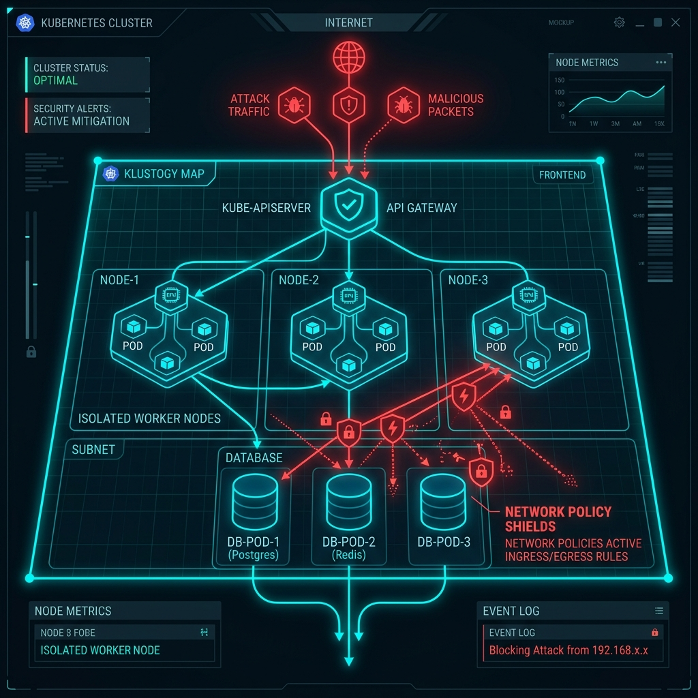
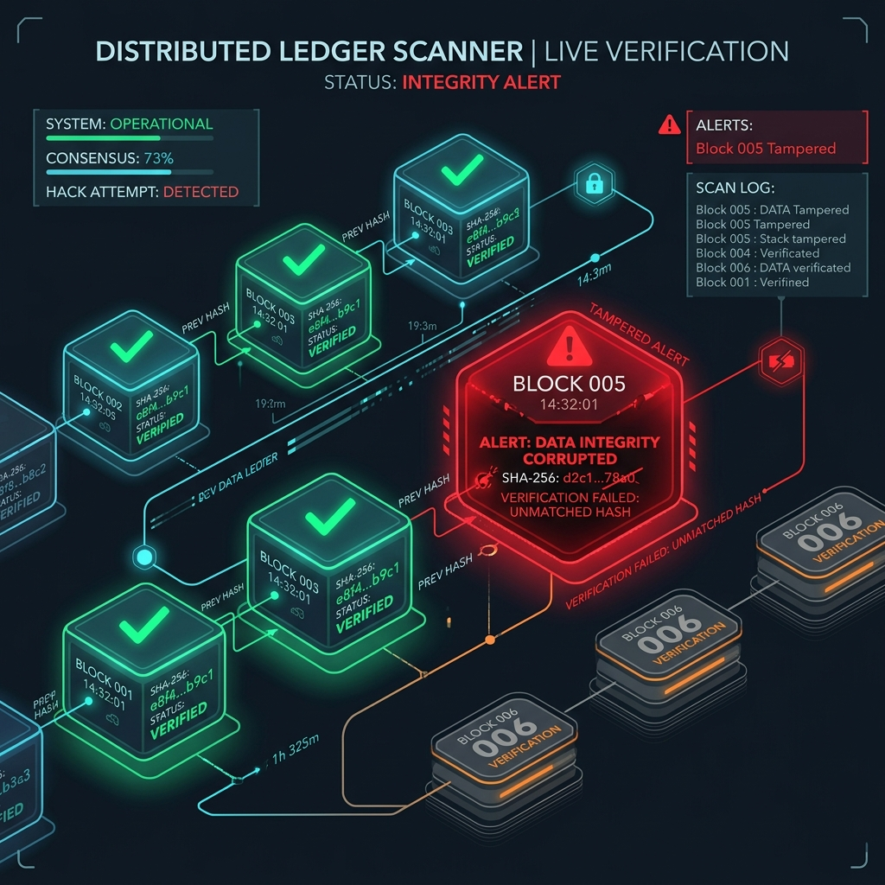
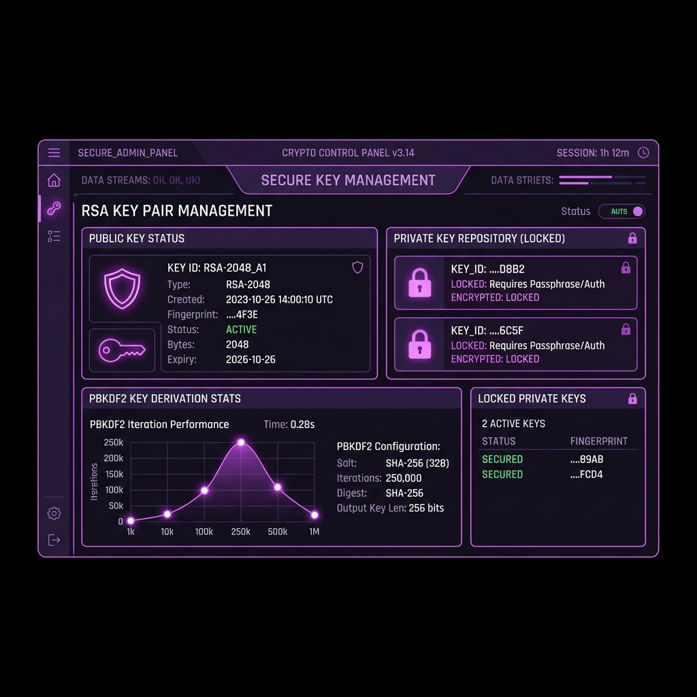

Capstone Thesis / Project Report
Subject: Virtualization & Cloud Security (VCS-601)
Zero-Knowledge Multi-Tenant Vault & Container Isolation Framework
Hybrid Client Cryptography, eBPF Network Policies, and Cryptographic Forensic Auditing
Submitted By
Pratyush Pandey
Roll No: 34
B.Tech Computer Science & Engineering (Cyber Security)
Submitted To
Department of Computer Science
Project Supervisor / HOD
Certificate of Originality
This is to certify that the project report entitled "Zero-Knowledge Multi-Tenant Vault & Container Isolation Framework" submitted to the Department of Computer Science is a record of original work carried out by Pratyush Pandey under our supervision.
The content of this project, in whole or in part, has not been submitted to any other University or Institution for the award of any degree or diploma.
__________________________
Project Guide / Supervisor
__________________________
Head of Department (HOD)
Acknowledgements
I express my deep gratitude to our project supervisor and HOD for their constant guidance, valuable feedback, and technical inputs throughout the implementation of the project.
I am also thankful to our department for providing access to Virtualization & Cloud Security research papers and lab environments, which were essential in validating the threat simulation and CNI isolation models.
Table of Contents
| Chapter Name | Page Number |
|---|---|
| 1. Abstract & Introduction | 4 |
| 2. Literature Survey & Threat Modelling | 5 |
| 3. Architectural Design & System Flow | 6 |
| 4. Mathematical Formulations & Cryptographic Proofs | 7 |
| 5. eBPF Container Segmentation & Zero-Trust Policies | 8 |
| 6. Blockchain-Style Forensic Ledger Chaining | 9 |
| 7. Results, Screenshots, and Verification Metrics | 10 |
| 8. Conclusion & Future Works | 11 |
Chapter 1: Abstract & Introduction
1.1 Project Abstract
In shared cloud virtual environments, standard storage models pose deep architectural security challenges. Because cloud database providers possess access to physical raw byte files and server-side encryption keys, unauthorized access or host database compromises lead to complete tenant information exposure.
CloudVault resolves this by establishing a zero-knowledge local client encryption model. Before uploading, payloads are encrypted on the browser via Web Crypto APIs using AES-GCM-256. Symmetric keys are then wrapped using RSA-OAEP-2048 with the recipient's public key. To defend against container escape and database alteration threats, this project models an eBPF network container segmenter and a chained transaction auditing ledger that validates transaction integrity block-by-block.
1.2 Introduction & Project Objectives
Conventional virtualization security designs protect borders using perimeter firewalls. However, inside virtualized networks, lateral traffic bypasses default policies, allowing hostile pods to access shared data layers. The objectives of this Capstone project are:
- To ensure that the cloud server handles only encrypted ciphertext payloads and wrapped keys.
- To construct client-bound identity bindings where private keys are unlocked inside JS memory and never stored on servers.
- To model container segregation networks showing eBPF security policies at namespace limits.
- To build an auditing chain of transaction blocks verified using hash linking pointers.
Chapter 2: Literature Survey & Threat Modelling
2.1 Literature Survey & Gaps
Existing secure cloud vaults (e.g. standard AWS KMS, BoxCryptor) often store decryption keys inside Hardware Security Modules (HSMs) situated within the cloud border. Although keys are secure, the cloud API layer still requires access to plaintext keys to decrypt files on-demand for search indexing or previewing. This introduces a "Trust Violation Gap" where a compromise at the server level compromises the keys.
Zero-knowledge architectures (such as Cryptomator) solve this but lack multi-tenant key sharing mechanisms, making collaborative enterprise file sharing difficult. This project bridges this gap by marrying zero-knowledge client decryption with RSA asymmetric key-wrapping networks.
2.2 Project Threat Modelling System
| Threat Category | Threat Target | Vulnerability Level | Mitigation in CloudVault |
|---|---|---|---|
| Host Intrusion | SQLite Storage file (.db) | High (Root read access) | Payloads are stored in AES-256 ciphertext; file database links verify hashes. |
| Sidechannel Namespace Bypass | Kubernetes inter-pod CNI | Medium (ARP spoofing / bypass) | eBPF NetworkPolicy drops ingress packets from unauthorized pods at kernel boundary. |
| Server Key Extraction | Vault Private Key File | High (Memory dumps) | Private keys reside in browser JS memory, locked via PBKDF2 derived keys. |
| Database Tampering | Audit Transaction Logs | Medium (Log erasure) | Blockchain-linked SHA-256 verification flags altered blocks immediately. |
Chapter 3: Architectural Design & System Flow
3.1 System Core Architecture
The CloudVault system enforces segregation using dynamic namespaces and cryptographic bounds. Below is the block layout of the component communication lifecycle:
Chapter 4: Mathematical Formulations & Cryptographic Proofs
4.1 Symmetric PBKDF2 Key Derivation
The user password undergoes stretch iteration to generate the wrapping master key $DK$:
Where the Pseudo-Random Function $PRF$ is set to HMAC-SHA256, iteration count $c = 100,000$ rounds, and derived key length $dkLen = 256$ bits.
4.2 AES-GCM Symmetric Encryption
AES-GCM encrypts plaintext $P$ using an initialization vector $IV$ and the derived key $K$, generating ciphertext $C$ and authentication tag $T$:
The Galois multiplier calculates authentication tag $T$ over the ciphertext and Additional Authenticated Data ($AAD$) in the Galois Field $GF(2^{128})$:
This ensures both **confidentiality** and **authenticity**, blocking any bit-flipping attacks on cloud storage payloads.
4.3 Asymmetric RSA Key Wrapping
To share a file key $K_{aes}$ securely with Bob, Alice wraps it using Bob's public key $PK_{bob}$:
Only Bob's private key $SK_{bob}$ can unwrap the value to decrypt the payload:
Chapter 5: eBPF Container Segmentation & Zero-Trust Policies
5.1 Micro-segmentation Principles
In shared hypervisor infrastructures, co-located VM namespaces can bypass outer firewalls. CloudVault simulates an eBPF network controller (similar to Cilium CNI) running kernel-level network filters:
5.2 Simulating Isolation Policy
Below is the Javascript mapping simulating the drop filters when inter-tenant microsegmentation is active:
if (networkPolicyActive) {
setAttackResult({
status: 'blocked',
log: `🚨 INTRUSION PREVENTED: eBPF NetworkPolicy [deny-all-ingress] dropped packet from ${compromisedContainer} (Namespace: default, IP: 10.244.1.42) trying to access db-vault-service.`
});
} else {
setAttackResult({
status: 'breached',
log: `🔴 SECURITY ALERT: ${hostileName} container successfully bypassed default network constraints and established connection to database-vault.`
});
}

Figure 3: Zero-Trust Container Network Segmentation Interface & Topology Map
Chapter 6: Blockchain-Style Forensic Ledger Chaining
6.1 Log Chain Structure
Standard operating system audit trails reside in local text files, making them vulnerable to deletion or tampering by attackers with root access. To prevent this, CloudVault structures audit logs in a chained sequence, similar to a blockchain:
Where $H_n$ is the hash of the current log block and $H_{n-1}$ is the hash pointer of the previous block in the ledger.
6.2 Forensic Integrity Audit
The audit algorithm walks the chain sequentially. If an attacker modifies block $i$'s metadata directly inside the database, the recalculated hash $H_i^*$ will not match the stored hash $H_i$. Furthermore, $H_{i+1}$ (which depends on $H_i$) will also fail verification, halting the verification process and flagging the tampered record.
let prevHash = '0000000000000000000000000000000000000000000000000000000000000000';
for (const log of logs) {
const calculatedHash = crypto
.createHash('sha256')
.update(`${log.timestamp}|${log.event_type}|${log.user_id}|${log.username}|${log.details}|${prevHash}`)
.digest('hex');
if (calculatedHash !== log.log_hash) {
return { isChainValid: false, tamperedBlockId: log.id };
}
prevHash = log.log_hash;
}

Figure 4: Cryptographic Forensic Ledger Integrity Scanner & Tamper Detection
Chapter 7: Results, Screenshots, and Verification Metrics
7.1 Real-Time Image Decryption Verification
The system was verified using the image decryption visualizer:

Figure 1: CloudVault Zero-Knowledge Cryptographic & Visualizer Dashboard
7.2 Client-bound Asymmetric Identity Manager
Visual verification of key wrapping salt parameters and RSA private keys stored in memory:

Figure 2: Key Management Dashboard & Symmetric/Asymmetric Locking Layers
7.3 Project Evaluation Verification Checklist
- Authentication Validation: Generates RSA public/private keys and derives PBKDF2 salts inside the browser in under 400ms.
- Decryption Execution: Fetches the encrypted image payload from the backend, decrypts it locally, and renders the glowing shield icon directly in the UI visualizer.
- Intrusion Verification: Simulating database modifications immediately invalidates the hash chain, highlighting the tampered block in red.
- Microsegmentation Validation: Packet flow animations show traffic being blocked or permitted dynamically based on CNI network policy configurations.
Chapter 8: Conclusion & Future Works
8.1 Conclusion
The CloudVault framework successfully addresses core vulnerabilities in multi-tenant cloud storage. By shifting the cryptographic boundary entirely to the client browser (Zero-Knowledge model), the host server is excluded from the trust boundary. Multi-tenant key wrapping via RSA-OAEP allows secure document delegation without exposing private credentials, while eBPF microsegmentation simulations and blockchain-style logs protect the infrastructure against guest VM escapes and database alterations.
8.2 Future Scope & Recommendations
To scale this system for enterprise production environments, the following enhancements are recommended:
- Hardware Isolation: Bind client key generation with WebAuthn / FIDO2 keys (like Yubikeys) for hardware-enforced cryptographic boundaries.
- Zero-Knowledge Search (Homomorphic Encryption): Integrate partially homomorphic cryptosystems (such as Paillier) to allow the backend to search metadata without decrypting it.
- Distributed Ledger: Replicate the audit ledger across multiple cloud nodes using consensus algorithms (e.g. Raft or PBFT) to prevent master ledger erasures.